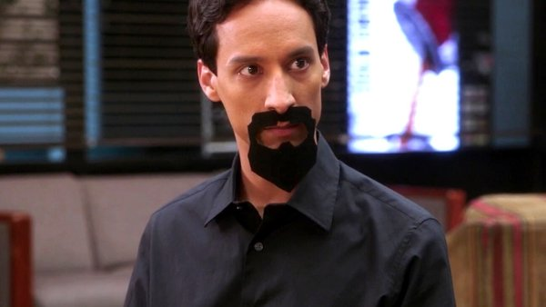
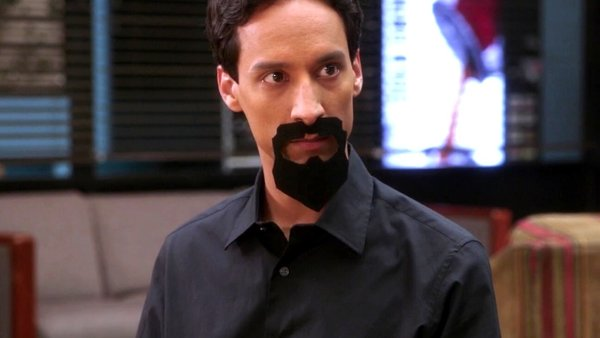
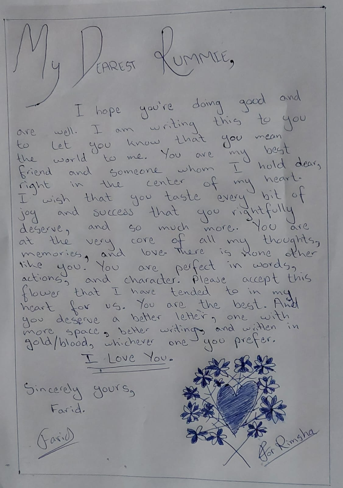
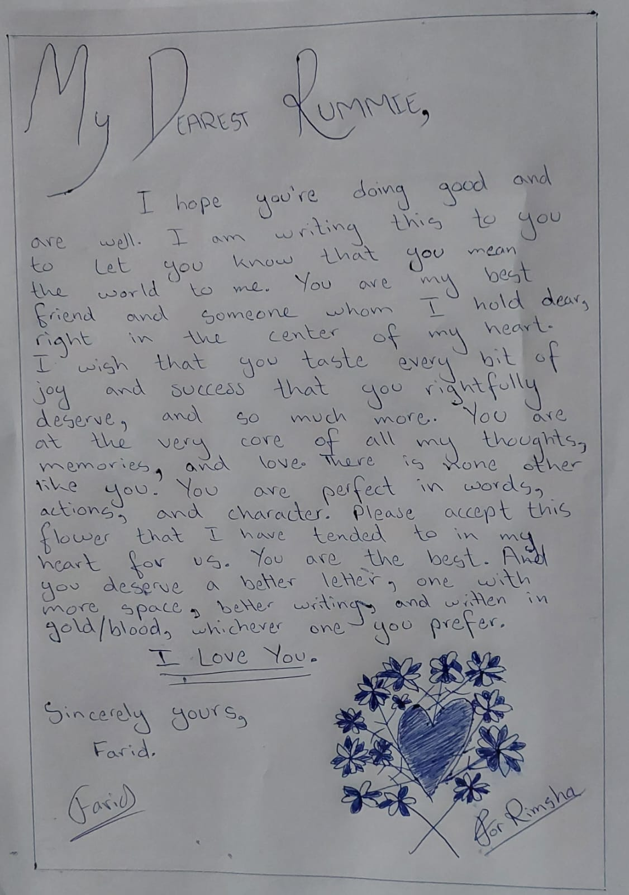

Untitled #2
Hey Rummie,
I hope this email finds you well.
Whenever I send this to you, I will text you on WhatsApp that I have sent you an email, not because I want you to reply but because I want you to read this and for this to not end up in your junk folder.
I'm writing to you again. That's obvious, I guess. I will try to keep this one short.
I have been okay. It's really hard to make even a minute go by. It was the last class of my TAShip today. At the end, they applauded for me and my co-TA because ma'am asked them as we had helped out a lot. All I could think of was how you were with me when I got the job and crows attacked you. A happy memory that hurt a lot. That is the case nowadays. Whenever I go to LUMS, I stare at the ground while walking because everywhere there are couples. It hurts to see them because once I was like them, walking with you. I haven't really been able to listen to music either. My brother plays some every morning while playing his games but mujhse nahi suna jata. I deleted my instagram accounts as you might have seen. I just couldn't go on there; I overthink a lot. I was going to try to delete WhatsApp as well, but then I realized that I needed a way for you to contact me if you have a change of heart. I can't just end every mode of communication. It was also needed for my TAShip and RAShip responsibilities. I stare at my WhatsApp chats a lot, hoping that your status would change to typing. But it doesn't, and I keep waiting. Even while I write this email on my laptop, WhatsApp desktop is open. I am keeping one eye of mine there and one here as I type this out.
Why am I typing this out?
Just to make you and myself go over all of what we're going through again?
One would think that I would be able to let this go. To let this be, to let this end. But I don't know, there is something that speaks within me, telling me that if I lose what we have, if I lose you, I won't ever amount to anything. I have made a lot of mistakes in my life, mistakes that I never got to make right. My conscience just can't let what you and I have become a part of that.
What exactly am I wanting to achieve with all this? For you to say okay I want to give this another shot? What happens then?
I feel like although us staying apart and not getting back together would prevent us from hating each other, but on the other hand, we would still be losing each other. What is the point of losing one's best friend, to see them turn into just a memory, just because the two people didn't want to hate each other? Technically, the outcome is the same, the only difference being that the two individuals are leaving with happy memories of each other. What good is a memory when it is only just that. A fade-able memory.
I have thought about what would happen if we were to get back together. Here is a summary.
Day 0: The Day
We have a really long phone call talking about our concerns, how big of a risk we're taking, us being hopeful and optimistic, reaffirming our love for another, and catching up. I can't begin to tell you how much I want to catch-up with you. I feel like we have not talked for centuries, 100 million stories ikathi hogayi hon gi, I want to listen to all of them. Agar humaray paas kuch kehne ko na bhi huwa, I feel like it has been centuries since we have stayed silent on the call together. I will tell you all that has been going on in my life, all the reels that I had saved before deleting my insta, the new GTA VI trailer!!! Aik aik cheez. Then I will ask if I can drop you to your university subah. This is the plan if you text me about this at night.
I will reactivate my instagram accounts with pronouns added. It'd be the return of Farid with The Will to Change.
If you text me at any point before the night, when it'd not be difficult for you to come out and see me, I would drive to your house, bring you the letter that I have handwritten, a dozen cookies, the perfumes that my khala brought for "bunny ki saheli", hug you so tight, ask you if you can stay for a while longer so that we can go get Jalal Sons ka Zinger. This is a major thing that I want us to do right away. Then I will drive back home and the first bullet point of Day 0 happens.
Day 1: Hearts in the Air
The next day I would pick you up subah and bring breakfast for you. You eat while I drive you to the university. I drop you and ask you to remember to text me when you get to class. Then I drive home and text you while I drive.
When you get free from university, I come and pick you up. We go to the subway right next to your college and eat. I take so many photos of you and us together. I also bring my laptop so we watch Shrek 1. Then I drive you home.
I call you as soon as I get home and we talk and then we have a watch2gether. You show me all the songs that you listened to while we were apart, I show you all the songs that played in my head constantly and made me think of you. We listen to adele, beabadoobee, "Glue Song", Radiohead, "Style", "illicit affairs", "blank space" and so much more.
Then I call you and start being manic aur thora sa tang karun ga. Then we talk about aliens thora sa. Then we sleep on call.
Day 2: Township
I pick you up again and bring you breakfast to eat in the car. Note that on Day 1 and Day 2 the breakfast that you'll be eating would be made by my mom. I'll specifically ask her to make sure it's appropriate and lactose free. I'll bring them for you in a lunchbox with water (juice) of course. I drop you and text you while I drive home.
Then I will pick you up and we will go to the township market. It's very crowded so we will park outside the plaza type thingy in Mochipura and then walk to the market and buy stuff. We will go to Khokhar Book Depot and I will show you where I used to buy my books and registers and stationary from when I was in school from nursery to grade 10. We will have so much fun, I'm getting excited just thinking about it even though I'm a million miles away from it seeing as I have no idea whether you will change your mind about this or not. It looks bleak.
Afterwards, we will be tired so we will go KFC Akbar Chowk. The bridge is finished so it's probably open. We will sit together and talk and again take so many photos. Then, I will drop you home, text you when I get home and talk the entire night through.
Day 3: Liberty
I'm picking and dropping you again. Also bringing breakfast for you of course. And texting you while I drive back.
I will bring you flowers when I come to pick you as well as my brown sweater. I will show you the new jeans that I got that are not skinny and tell you about The Will To Change. We will go to Liberty after I pick you. I want to buy a long coat from there as well as high necks. I will be wearing a black sweater over a white collared buttoned-up shirt. We will look so cute sitting together. We can also take your friends along with us so that they can take photos of us. Or we will just ask a random passerby and hope they don't run away with my phone. Afterwards, we will go to Readings agar time huwa warna I will drive you to Jalal Sons. We will eat on the slope. Jo na khaya gaya wo hum billi ko daal den ge wahan.
Day 4: Meeting with Komal
Depending upon whether or not this is a weekday with your university on, we will meet with Komal. Otherwise we will go watch a movie.
I will sit next to you with Komal sitting opposite. We will talk, have a proper introduction and meeting. I will correct her in case she says anything wrong and have my arm around you during the entire time. It will be so cute.
If it's a weekday, we will go watch a movie. We will choose whatever is playing but after we get to the cinema, not before. It will be more fun and spontaneous that way.
Day 5 and Beyond:
We will go to Bamboo Union and eat lemon grass chicken.
Afterwards, we will go to DHA Readings and maybe order something from the Fasana Cafe.
We will sit and read and tell each other how we're liking the book. We will pick a dumb book and read it out to each other, making fun of it as we go.
Everyday beyond will contain love, care, consideration, and activities in spirit of the C.A.T framework. We will be happy together, instead of going through this constant, ever-lasting pain of losing each other, having lost each other forever.
I wrote this all out and had a breakdown. I realized that I felt so happy writing this all out, anticipating it and being excited for it. But all of that was just in my head. Imaginary. It hit like a truck full of bricks. I hate that my heart is like a child.
I want this to be real, I would give anything to see it turn from the pages of my thoughts and words in this email to a reality that we both experience together. I want us to be as happy as I was writing this all out and thinking about it, together.
When you read this, you will feel like I'm writing all of this out just so I can make you stay a little while longer, just so that I can eventually hurt you despite making all of these promises. All this itinerary of what we will do and end up doing nothing when you say that you want to give this another shot. If I was in your place, feeling what you have been feeling, going through what you're going through, and you wrote all of this to me, I would feel the same way.
I am constantly thinking of you. How you're doing, how your day was, how your friends are, sab kuch kya chal rha hai. I think about every little thing. I miss you so much. It is so difficult knowing that you probably aren't doing well and being able to text you. It hurts that we can't be sad and not okay together anymore. I wonder everyday if you have cried that day or not. And it hits me hard. Crying because of baybasi and helplessness is worse than just crying and I know we both have been crying because of this feeling of baybasi. For you, that baybasi is probably due to the fact that I have changed and things are no longer the way they were. For me, that baybasi is due to the fact that I can't get to show you that things can be again like the way they were, if not better. Love is indeed a long, long road.
I added a few songs to your playlist. I hope you heard them. The last song, "Like You Do" by Joji, describes how I feel about you.
I really think that we can work. This isn't a short-term thought that I'm thinking and typing out just to make you stay.
If there's one thing that has stuck with me during all this time of pain, it is that I am never going to let your fears materialize. The worst case scenario that is in your mind, that you won't be able to live with yourself if this doesn't work out again will never come to pass. I won't let it. I will burn the bridge down if that seems to be on the horizon, tear down the road, suck all the air out so it can't be airborne, drink all the water so it can't swim, terraform the place so every path that that worst-case scenario wants to take is blocked and blocked for good. Why put so much effort? There are not many times in one's life that one gets to experience something so special, but when that thing comes, all the amount of efforts in the world seems little. As I have gotten older, I have realized that people come and go. But there are some people you'd rather not go, some people that you would like to stay in your life so that their light is by your side. There are countless people in the world who only spread dark, only a few like you who radiate light just by existing. Aise log roz roz nahi milte, Rimsha.
I keep looking at your chat just to see you typing and the only thought that goes through my mind is that it will eventually change to typing. And you will come and say:
 I also keep thinking of all your favorite tv shows and movies, relating our situation to a moment in them, much like in my last email I mentioned that dialogue from Portrait of a Lady on Fire. I also said to you how I don't want this timeline to be the one in which we have lost each other. Here's a Community reference.

I don't like this Abed. I like the good Abed that says "cool, cool, cool, cool", not the darkest timeline Abed who says "cruel, cruel, cruel, cruel." It's the same with us. I don't like the darkest timeline Farid and Rimsha who aren't okay and don't talk to each other anymore. I like the good Farid and Rimsha, the ones who tell each other stories of a little girl named Anna leaving her dying home planet, and sees a little plant trying to survive in the desolate environment just before the doors of the spaceship close. Rimsha and Farid who tell each other stories of Rimsha and Farid, two unwilling soldiers-turned-deserters and fugitives and lovers. I love these Rimsha and Farid. And I am sure you do too.
We went to the township market and I was in the car baby-sitting Tabaan, looking after him. I decided to play with him to keep him from thinking about when mom and Komal will come back. We started recording things, he enjoys that. He made one for you. I will send that audio on WhatsApp, I will also text you to read this email before playing it otherwise it may sound out of place. Hmm, maybe I should just attach it here. Click here to access it: loomie.mp3. Remember to let me know if this opens, warna I will send it to you directly through WhatsApp. I told him to say "aap" but he is thora sa badtameez. I apologize on his behalf.
At the end, everything comes down to you. Throughout this email, I have tried very hard to not use a certain word. But I feel like I should. Please Rummie consider this email. Please aazma lo mujhe aik aakhri martaba (martaba) phir. I won't let the worst come to pass. The scars that are already there will be filled up with love and care, I think that is better instead of letting them be as they are forever. The risk here is big that those scars will get deeper, I know. But I think that letting them be filled with love and care is worth taking that risk because the reward will be so much rewarding.
I'm asking the world of you when I say k mere dil ko bas aik akhri dafa aazma k dekhlo. That I will honour you and my words. All I know is that I must try, the hope in my heart does not die. All of what I have written to you awakens the long-dead optimist in me with the thought that maybe your heart does change after some time has passed by the day I send this, and after reading all of this. That maybe you find the courage within you to give this another shot, and that I get a chance to not let you ever regret that you ever found that courage within you in the first place.
The plan is to send this out to you a few days or so before my birthday, not only so that I have given you some space but also so that you get some time to consider and (hopefully) tell me on my birthday that the picture is abhi still left. I was watching this Variety Actors on Actors video with Cillian Murphy and Margot Robbie. At one point they're talking about Barbie and Oppenheimer releasing on the same date. Cillian Murphy says that Nolan has some superstition because of which most of his movies have released on the 21st, including Oppenheimer. Margot Robbie says "well, it is a good date." I'm not sure if I agree, but hearing her say that and smile gave me a lot of hope. Maybe she will turn out to be right. But there are many moons till that day and I don't know if I will be able to hold on to this till that time. Every passing minute is difficult with all these feelings that I'm carrying. The thought of you not feeling anything for me anymore gets stronger with each passing minute. And I want you to read all of this before that happens so that there is still hope left.
I also keep thinking of all your favorite tv shows and movies, relating our situation to a moment in them, much like in my last email I mentioned that dialogue from Portrait of a Lady on Fire. I also said to you how I don't want this timeline to be the one in which we have lost each other. Here's a Community reference.

I don't like this Abed. I like the good Abed that says "cool, cool, cool, cool", not the darkest timeline Abed who says "cruel, cruel, cruel, cruel." It's the same with us. I don't like the darkest timeline Farid and Rimsha who aren't okay and don't talk to each other anymore. I like the good Farid and Rimsha, the ones who tell each other stories of a little girl named Anna leaving her dying home planet, and sees a little plant trying to survive in the desolate environment just before the doors of the spaceship close. Rimsha and Farid who tell each other stories of Rimsha and Farid, two unwilling soldiers-turned-deserters and fugitives and lovers. I love these Rimsha and Farid. And I am sure you do too.
We went to the township market and I was in the car baby-sitting Tabaan, looking after him. I decided to play with him to keep him from thinking about when mom and Komal will come back. We started recording things, he enjoys that. He made one for you. I will send that audio on WhatsApp, I will also text you to read this email before playing it otherwise it may sound out of place. Hmm, maybe I should just attach it here. Click here to access it: loomie.mp3. Remember to let me know if this opens, warna I will send it to you directly through WhatsApp. I told him to say "aap" but he is thora sa badtameez. I apologize on his behalf.
At the end, everything comes down to you. Throughout this email, I have tried very hard to not use a certain word. But I feel like I should. Please Rummie consider this email. Please aazma lo mujhe aik aakhri martaba (martaba) phir. I won't let the worst come to pass. The scars that are already there will be filled up with love and care, I think that is better instead of letting them be as they are forever. The risk here is big that those scars will get deeper, I know. But I think that letting them be filled with love and care is worth taking that risk because the reward will be so much rewarding.
I'm asking the world of you when I say k mere dil ko bas aik akhri dafa aazma k dekhlo. That I will honour you and my words. All I know is that I must try, the hope in my heart does not die. All of what I have written to you awakens the long-dead optimist in me with the thought that maybe your heart does change after some time has passed by the day I send this, and after reading all of this. That maybe you find the courage within you to give this another shot, and that I get a chance to not let you ever regret that you ever found that courage within you in the first place.
The plan is to send this out to you a few days or so before my birthday, not only so that I have given you some space but also so that you get some time to consider and (hopefully) tell me on my birthday that the picture is abhi still left. I was watching this Variety Actors on Actors video with Cillian Murphy and Margot Robbie. At one point they're talking about Barbie and Oppenheimer releasing on the same date. Cillian Murphy says that Nolan has some superstition because of which most of his movies have released on the 21st, including Oppenheimer. Margot Robbie says "well, it is a good date." I'm not sure if I agree, but hearing her say that and smile gave me a lot of hope. Maybe she will turn out to be right. But there are many moons till that day and I don't know if I will be able to hold on to this till that time. Every passing minute is difficult with all these feelings that I'm carrying. The thought of you not feeling anything for me anymore gets stronger with each passing minute. And I want you to read all of this before that happens so that there is still hope left.
 We have known each other for an entire year, we have shared ourselves with each other. I guess, then, it wouldn't be right for me to be afraid about this and overthink, but at the same time, I can't help but be scared and overthink.
If I end up not being able to hold onto this till then, please don't consider it a violation of when I said I won't text you. I was probably feeling a lot of stuff and unable to contain myself when I decided to send this to you. But for now, I will hold on to this for as long as I can.
Finally, please accept this flower in my heart. It represents my love for you, stronger, better, bolder, unafraid and unwavering.

The margins are drawn with a scale. They are straight and they align, it's just that the picture taken had a skewed angle. I hope to give this to you in person so that you will be able to see it for yourself. The visual representation of the flower(s) in my heart for you isn't as beautiful as it/they are in actuality. Unfortunately, I don't have the skill with a pen to do it/them justice visually. After I had written this and drawn the heart and the flowers, I realized this piece of paper is a lot like how I expect things to be with you. The letter is not perfect: the "M" and "y" in "My" could be better, the "D" in "Dearest" could be better, there is a "y" which I overextended into the line below, the handwriting could be better. There are tiny bits of blots and smudges of ink which you can see. These faults in the letter are pretty symbolic of little transgressions, mistakes, ghaltiyan that occur in relationships and that will occur in ours even if you do reconsider. The point of all this is not to say that we will never fight because to say that will be unrealistic and simply untrue. These things are a part of life. But note that there is no unsightly flaw in the letter: the text is pretty aligned even with a lack of horizontal margins, there are no typos and I'm the king of typos, there is nothing cut. I had one shot at writing this in one go, and I did it without any major fuckup. This is to say that there won't be a big fight over the same things that we have fought about, a fight that fills you with regret. This is all so because I wrote this letter with love, care, and attention, exactly like how I want to proceed with us going forward. So I think this letter is pretty symbolic.
Whenever I send this out, I will text you. Please don't reply to me, not even after reading this letter in its entirety. Instead, I will wait for your text, and hope for it to arrive on my birthday. The hope in me does not die.
In the beginning of this email, I had said that I would try to keep this short. I think these are 3,000 words or something. Everyday I have a new thing to tell you, to write to you. I really wish I could once again tell you everything as it happens to me in my life.
I feel so proud to have picked you to share myself with, to call my best friend, to fall in love with. I miss you, I miss your friendship, and I miss aap ka saath.
We have known each other for an entire year, we have shared ourselves with each other. I guess, then, it wouldn't be right for me to be afraid about this and overthink, but at the same time, I can't help but be scared and overthink.
If I end up not being able to hold onto this till then, please don't consider it a violation of when I said I won't text you. I was probably feeling a lot of stuff and unable to contain myself when I decided to send this to you. But for now, I will hold on to this for as long as I can.
Finally, please accept this flower in my heart. It represents my love for you, stronger, better, bolder, unafraid and unwavering.

The margins are drawn with a scale. They are straight and they align, it's just that the picture taken had a skewed angle. I hope to give this to you in person so that you will be able to see it for yourself. The visual representation of the flower(s) in my heart for you isn't as beautiful as it/they are in actuality. Unfortunately, I don't have the skill with a pen to do it/them justice visually. After I had written this and drawn the heart and the flowers, I realized this piece of paper is a lot like how I expect things to be with you. The letter is not perfect: the "M" and "y" in "My" could be better, the "D" in "Dearest" could be better, there is a "y" which I overextended into the line below, the handwriting could be better. There are tiny bits of blots and smudges of ink which you can see. These faults in the letter are pretty symbolic of little transgressions, mistakes, ghaltiyan that occur in relationships and that will occur in ours even if you do reconsider. The point of all this is not to say that we will never fight because to say that will be unrealistic and simply untrue. These things are a part of life. But note that there is no unsightly flaw in the letter: the text is pretty aligned even with a lack of horizontal margins, there are no typos and I'm the king of typos, there is nothing cut. I had one shot at writing this in one go, and I did it without any major fuckup. This is to say that there won't be a big fight over the same things that we have fought about, a fight that fills you with regret. This is all so because I wrote this letter with love, care, and attention, exactly like how I want to proceed with us going forward. So I think this letter is pretty symbolic.
Whenever I send this out, I will text you. Please don't reply to me, not even after reading this letter in its entirety. Instead, I will wait for your text, and hope for it to arrive on my birthday. The hope in me does not die.
In the beginning of this email, I had said that I would try to keep this short. I think these are 3,000 words or something. Everyday I have a new thing to tell you, to write to you. I really wish I could once again tell you everything as it happens to me in my life.
I feel so proud to have picked you to share myself with, to call my best friend, to fall in love with. I miss you, I miss your friendship, and I miss aap ka saath.
Sincerely yours, with all my love, always Farid. ❤️